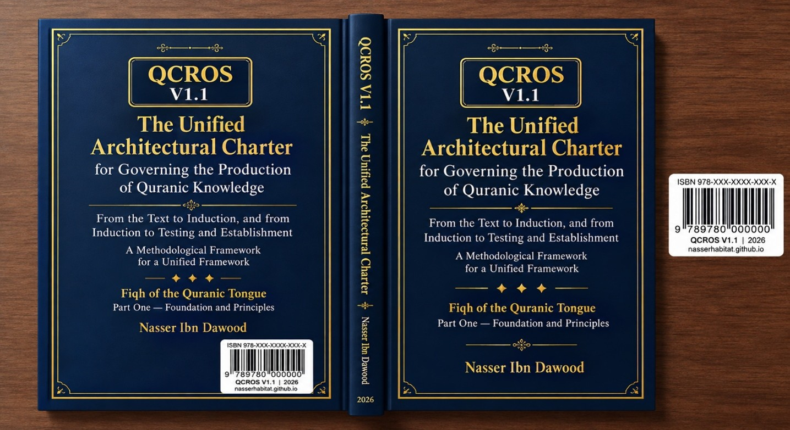

Nasser Ibn Dawood
Text extracted from the author-supplied Word edition; consult the original source.
Preparing the reader…
THE VICTORY ENGINEERING SERIES
QCROS — Governance of Qur’anic Knowledge Production
Methodological constitution for reference, induction, hypothesis, testing, and limits of claim
Condensed Semantic English Edition
Nasser Ibn Dawoud — 2026
Prepared as a concise English rendering for international readers
The Global Knowledge Manifesto
I. The Global Knowledge Manifesto
Knowledge is a universal right. The author firmly believes that wisdom should not be locked behind paywalls or language barriers.
• Global Access Policy: All books in this library are available for free in multiple digital formats (PDF, HTML, DOCX, TXT).
• The Digital Library: As of early 2026, the collection hosts 68 volumes (34 in Arabic and 34 in English), fully optimized for AI-assisted research and digital archiving.
• Official Platforms:
Main Website: nasserhabitat.github.io/nasser-books/
GitHub: nasserhabitat/nasser-books
Editorial note: This manifesto is reproduced here at the request of the author and is included in both condensed English volumes.
Contents
Series Statement and Reader’s Orientation
Introduction: From Interpretation to Governance of Knowledge Production
Part I — Foundational Axioms of QCROS
Part II — Evidence Layers and Testing Filters
Part III — Operational Laws and the QCROS Research Cycle
Operational Profiles, Research Completeness, and Decision Readiness
Conclusion and the Bridge to Volume II
Core Terminology and Symbols
Series Statement and Reader’s Orientation
The Victory Engineering Series is deliberately divided into two complementary levels. Volume I governs the production of knowledge: how a researcher moves from Qur’anic wording and evidence to observation, hypothesis, testing, judgment, law, and operational model. Volume II governs action and the reading of outcomes: how disciplined knowledge becomes responsible action, and how results are interpreted without turning success into proof of truth or failure into proof that the underlying principle was false.
The two volumes therefore form a methodological handoff rather than a repetition. Volume I asks: “What are we entitled to say?” Volume II asks: “What are we entitled to do, and what are we entitled to infer after acting?”
The term “engineering” is organizational and representational. It does not mean that revelation, the unseen, divine enabling, or ultimate outcome can be reduced to a calculable machine. The series distinguishes humanly governable processes from results that do not belong to human ownership.
Introduction: From Interpretation to Governance of Knowledge Production
The central problem addressed by QCROS is not simply the abundance or scarcity of Qur’anic interpretations. It is the lack of an explicit system for monitoring the path from evidence to declared conclusion. A researcher may begin with wording that is actually present in the Qur’an, move to a possible meaning, then to a theoretical pattern, and finally to a general law—without clearly marking the transitions. QCROS treats these as different epistemic levels and requires each transition to be visible.
The governing distinction is between what the Qur’an explicitly states, what a researcher observes across its occurrences, what hypothesis is proposed to explain that observation, what survives testing, and what may finally be expressed as a law or model. A useful model does not thereby become Qur’anic revelation.
QCROS therefore shifts the question from “What does this word mean?” to the prior methodological question: “How did the researcher arrive at this meaning, what evidence supports the transition, what alternatives were considered, what could falsify it, and what rank does the evidence actually justify?”
The framework does not promise error-free research. Its aim is to make error visible, traceable, reviewable, and correctable. A result classified as unresolved is not automatically a research failure; saying “we do not know yet” can be more methodologically honest than premature closure.
Part I — Foundational Axioms of QCROS
1. Coherence of the Qur’anic Statement
QCROS adopts the coherence of the Qur’anic discourse as a reference axiom of the project. This is not presented as an empirical result produced by QCROS. If a human model creates a contradiction with a Qur’anic occurrence inside its declared scope, the first methodological response is to review the model and its inferential bridge rather than to label the occurrence anomalous.
2. The Whole Reference and Functional Integration
The Qur’an is treated as the governing reference within the project, but comprehensiveness does not mean collecting superficially similar verses and forcing them into one meaning. Similar wording may perform different functions, belong to different domains, or have different relations and constraints. A claim must therefore declare its scope and cannot silently migrate from one semantic network to another.
3. Network Before Isolated Resource
A Qur’anic expression is not defined by lexical form, assumed derivation, or one isolated occurrence. Its analysis considers forms, predicates and participants, complements and restrictions, immediate context, recurring compounds, contrast and complementarity, separation patterns, and occurrences that resist the proposed definition. Root similarity opens a comparative question; it does not by itself prove identical function.